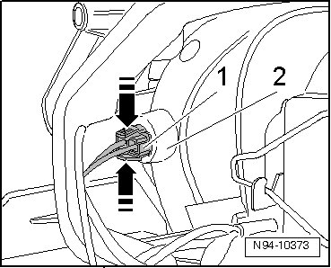
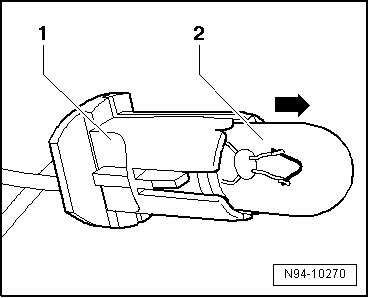

Parking Lamp Bulb
HID Headlamps with Cornering Lamp, through 11.06
Parking Lamp Bulb
• Left Parking Lamp (M1) and Right Parking Lamp (M3) can be checked via output Diagnostic Test Mode (DTM) of Vehicle Electrical System Control Module (J519) --> [ Vehicle Electrical System Output Diagnostic Test Mode ] Initial Inspection and Diagnostic Overview.
• Illustrations depict replacement of parking lamp at left headlamp.
• Replacement of Left Parking Lamp (M1) and Right Parking Lamp (M3) is performed analogously.
Removing
- Switch off ignition, switch off all electrical consumers and remove ignition key.
- Remove headlamp --> [ Headlamps, through 11.06 ] Headlamps, through 11.06.
- Remove mounting bolts - arrows - and pull off bracket - 1 - with HID lamp control module - 2 - as far as wire lengths allow from headlamp.

• HID lamp control module - 2 - must not be removed from bracket - 1 -.
- Disengage retaining tab - arrow A - of harness connector - 1 - and disconnect harness connector - 1 -.

• Harness connector - 2 - of HID lamp control module must not be disengaged and disconnected.
- Disconnect the connector - 2 - from the HID lamp - 1 -.

- Remove bracket - 1 - with HID lamp control module and wire from headlamp.
- Disengage - arrows - lamp socket - 1 - with parking lamp.

- Pull lamp socket - 1 - as far out of reflector - 2 - as wire lengths allow.
- Remove parking lamp - 2 - from lamp socket - 1 - in - direction of arrow -.

Installing
Install in reverse order of removal, noting the following:
• Make sure seal has proper seating when installing bracket with High-intensity Gas Discharge Lamp Control Module. It is destroyed by ingress of water into headlamp.
• Do not touch the glass of the light bulb, when installing. Your fingers will leave traces of grease on the glass which, when the lamp is switched on, will evaporate and cloud the glass.
- Check headlamp for function.
- Check and adjust headlamp aim if necessary